Verify Yes-Shares
yes_shares.RmdThe stability of municipal voting behavior presents a significant advantage from a result verification standpoint. Municipal ideological alignment generally shifts only gradually, allowing for the identification of historical referenda that exhibit approval patterns similar to those of current proposals. Leveraging this stability, we can make precise predictions and run simulations on voting sundays to estimate the expected outcomes based on historical data trends.
library(devtools)
# Installation of the "swissdd"-Package to load vote-results from opendata.swiss
devtools::install_github("politanch/swissdd")
library(plausi)
library(tidyr)
library(dplyr)
library(swissdd)
library(kernlab)
library(caret)
# Municipality-codes ("BFS-Nummern") of selected municipalities
bfs_nrs <- c(6,7,10,11,12,87,219,294,181,38,60,92,119,182,218,261)
# Get historical data
results <- swissdd::get_nationalvotes(from_date="2017-03-01", to_date="2020-09-27")
# Introduce an artificial error
results<- results %>%
mutate(jaStimmenInProzent=ifelse(mun_id==7 & id == 6310, jaStimmenInProzent+15, jaStimmenInProzent))
# Transpose historical data into wide format (= one column per ballot / vote topic)
testdata <- results %>%
filter(canton_id==1 & mun_id %in% bfs_nrs) %>%
mutate(id=paste0("v",id)) %>%
select(jaStimmenInProzent, id, mun_id, mun_name) %>%
pivot_wider(names_from=id, values_from = jaStimmenInProzent) %>%
drop_na()
# "Some municipalities are more challenging to predict, especially if their voting patterns deviate significantly (e.g. the city of Zurich in our case). We can address this by increasing their weighting through upsampling.
traindata <- testdata %>%
mutate(ntimes = ifelse(mun_id %in% c(261, 12), 3, 1))
traindata <- as_tibble(lapply(traindata, rep, traindata$ntimes)) %>%
select(-ntimes)
# Predict results
predicted_results <- plausi::predict_multiple_votes(x=c("v6350","v6310"),
traindata=traindata,
testdata=testdata,
method = "svmRadial",
geovars=c("mun_id","mun_name" ))
# Root mean squared error (RMSE) per ballot
predicted_results %>%
group_by(vorlage) %>%
summarize(rmse=RMSE(pred,real))
#> # A tibble: 2 × 2
#> vorlage rmse
#> <chr> <dbl>
#> 1 v6310 1.92
#> 2 v6350 1.11
# Calculate the deviation of the reported result from the prediction and flag values that deviate by more than three RMSE as anomalous
gem_pred <- predicted_results%>%
mutate(error=real-pred) %>%
group_by(vorlage) %>%
mutate(rmse=RMSE(pred,real)) %>%
mutate(error_rmse=error/rmse) %>%
mutate(outlier=error_rmse>3)
# Knonau with the anomalous result gets flagged
gem_pred %>% filter(outlier==TRUE)
#> # A tibble: 1 × 9
#> # Groups: vorlage [1]
#> mun_id mun_name pred real vorlage error rmse error_rmse outlier
#> <chr> <chr> <dbl> <dbl> <chr> <dbl> <dbl> <dbl> <lgl>
#> 1 7 Knonau 47.7 54.2 v6310 6.55 1.92 3.41 TRUE
# Plot the deviations
ggplot(gem_pred, aes(vorlage,error))+
geom_point(aes(color=outlier))+
geom_violin(alpha=0.5)+
scale_color_viridis_d()+
theme_minimal()